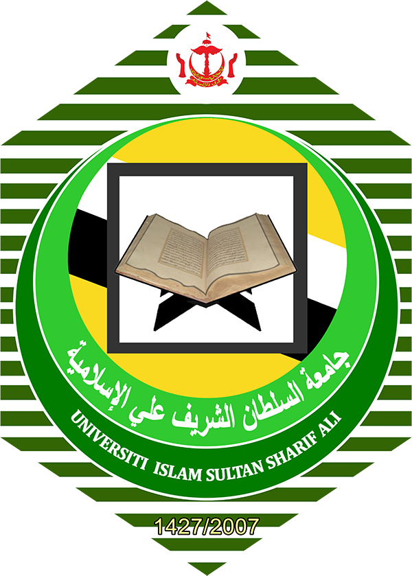

Pioneering accessible, data-driven agricultural drone solutions tailored for Brunei and regional farming communities.
Saqy Fly originated from the desire to make advanced aerial technology practical, affordable, and actionable for local farmers. Rather than complicated tools built for massive foreign agribusinesses, we focus on modular drone applications that solve day-to-day challenges in paddy cultivation, plantations, and specialty crops.
To support smarter, more sustainable farming decisions through reliable aerial spraying and monitoring services.
Every Drop. Every Crop. Every Future. Empowering every agricultural steward with data-driven clarity and efficiency.
Delivering inputs only where necessary, preserving soil health and reducing chemical consumption.
Providing straightforward visual maps and summaries rather than overwhelming raw data.
Conserving precious water and resource inputs while protecting field personnel safety.
Working closely with local cooperatives, researchers, and farmers in pilot phases.
The Saqy Fly project is driven by our student development team under technical and academic supervision across Islamic technology, agriculture, and aerospace engineering.
Multidisciplinary guidance from academic staff at UNISSA and UTM.

Notice: Academic affiliations and institutional emblems reflect project supervision and research guidance. They do not constitute official institutional endorsement or commercial partnership.
We are seeking pilot farm partners, research collaborations, and community stakeholders.